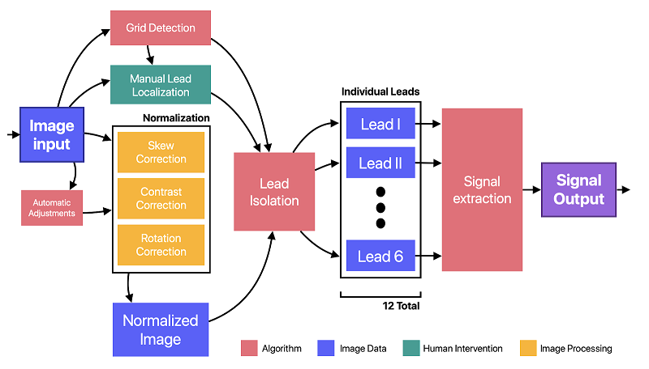
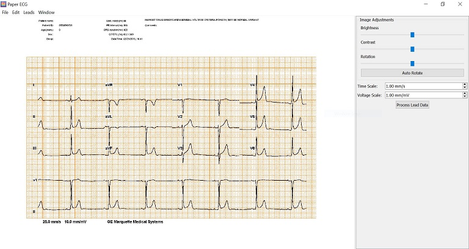
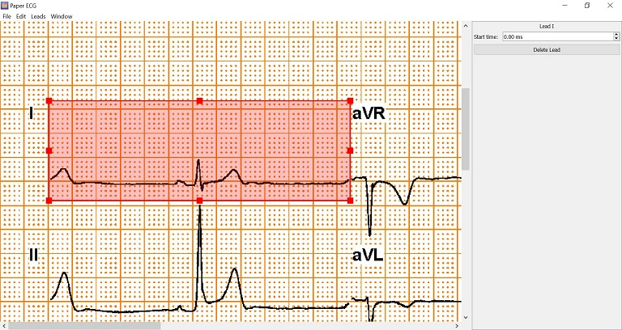
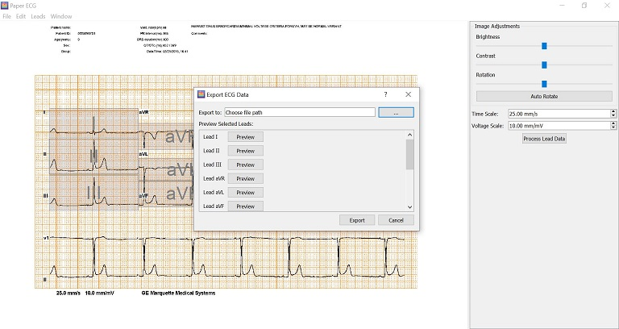
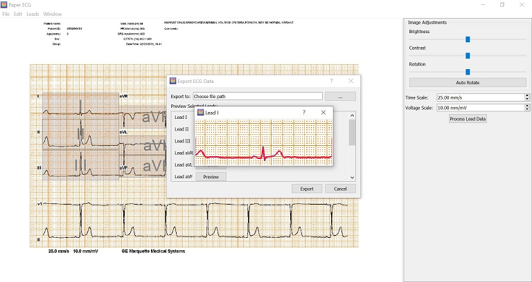

Paper Electrocardiogram Digitization
Overview
This project is being completed as part of Oregon State University's Senior Capstone Design course. A fellow student, Julian Fortune, and I are working with Dr. Larisa Tereschenko, a clinical researcher at OHSU, to develop an open-source digitization application that converts paper electrocardiogram (ECG) images into digital signal data.
Motivation
Dr. Tereschenko relies on ECG data for her work. Large amounts of data, however, are still trapped in paper form. A convenient digitization application to use in the lab will enable her to leverage large stores of paper ECG data and advance her research on heart disease. Furthermore, the free availability of this tool will enable the entire field of cardiovascular researchers to digitally analyze these paper-only data sets.
Design
Goals
Our goal for this project was to build a desktop application with an intuitive graphical user interface (GUI) that takes in a scanned ECG image and outputs the signal data to a CSV or text file. We aimed automate the process as much as possible, minimizing human intervention and streamlining the process of digitizing large datasets.
Tools
- Language: Python (version 3.6.7)
- GUI Framework: PyQt5
- Packaging and Build system: Fman Build System
Process Flow

Implementation
Our application's interface consists of an editor, which is split into a graphics view and a control panel.

Once a user imports an ECG image into the application, they can make any adjustments to the image's brightness, contrast, or rotation as needed to enhance the readablity of the scan. Then they can begin localizing each lead using rectangular bounding boxes.

After all desired leads are localized, they can be processed using the Process Lead Data button on the control panel. If the signal extraction is successful, a dialog pops up allowing the user to pick a export path. To ensure accuracy before exporting, the user may preview a visual representation of the extracted signal overlayed on the original lead.


Here's a quick demo:
My Contributions
For this project I was in charge of our GUI design and implementation. This meant writing code for all user facing components of the application and transforming all user input into a model that could be processed and turn into digital signal data. I followed the Model-View-Controller (MVC) design architecture for this. All GUI components are the 'view' of the application, which the user can interact with to change the model. As the view changes (e.g. localizing leads), the GUI element sends a signal to the controller with the new data, and the controller then updates an internal ECG 'model'. The built in signals and slots of the PyQt5 framework made implementing this MVC design a breeze. Each GUI component is able to emit a signal when it is updated, and the controller can simply connect a callback function to that signal to execute model updates as needed. Most of my code contributions can be found under the model/, views/, and controllers/ directories on our Github here.